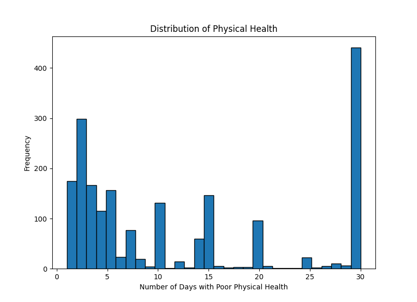
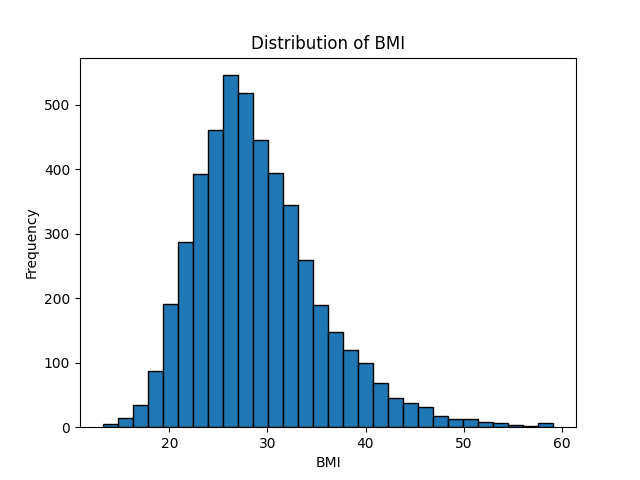
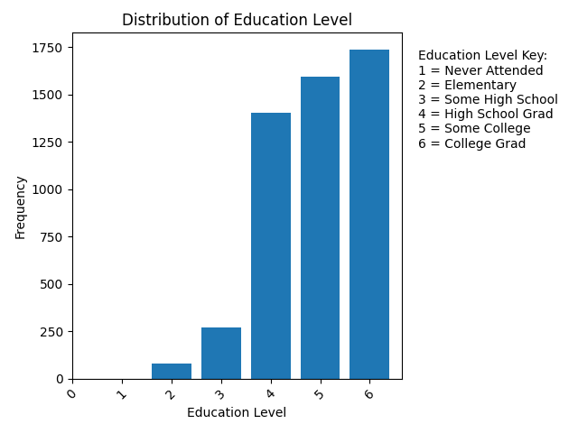
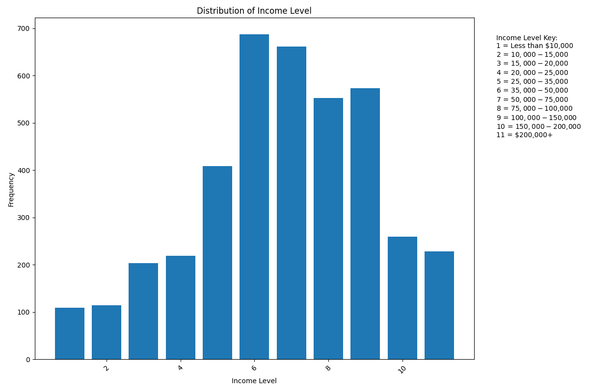
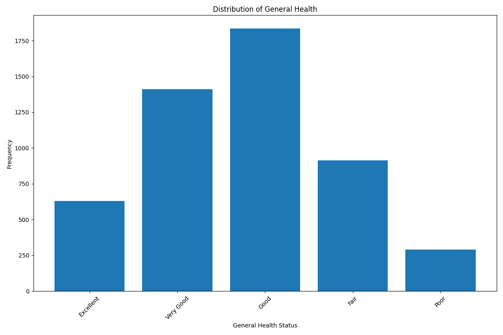
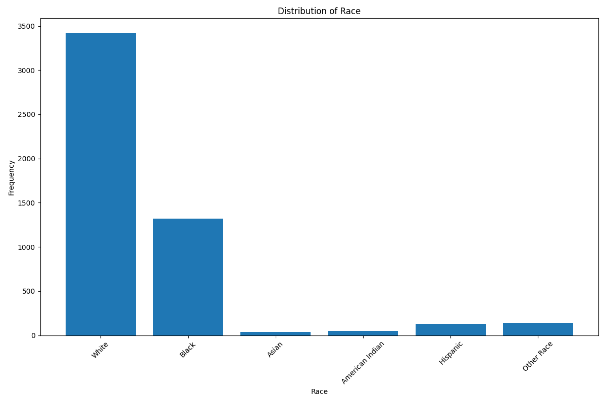
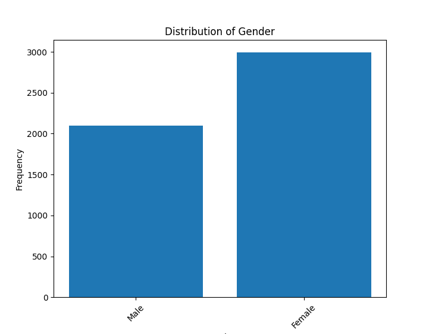
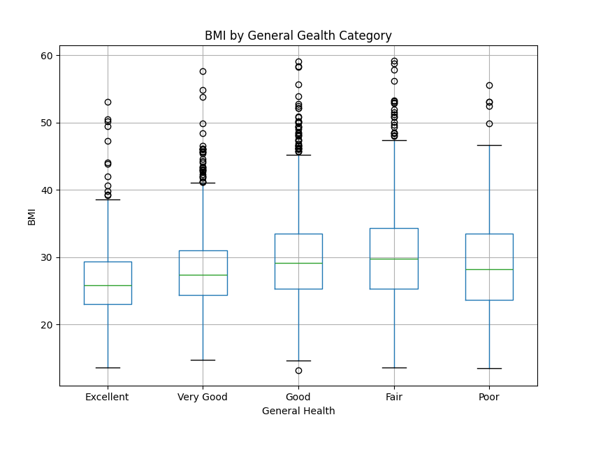
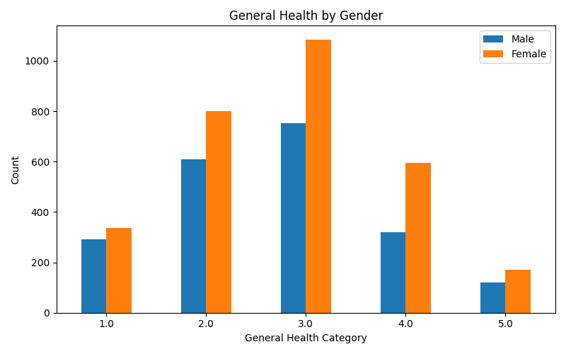
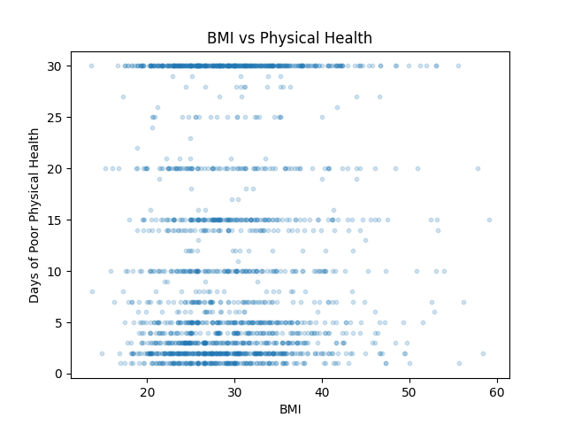

The data used for these visualizations was collected by the Center for Disease Control and Prevention (CDC) through the behavioral Risk Factor Surveillance System. For this analysis, only data from Alabama was used, which limits the generalizability of the findings to other states or populations.
This dataset is based on self-reported responses from individuals aged 18 and older and is designed to provide insight into physical and mental health and lifestyle factors.
However, there are multiple sources of bias. First, responses are self-reported which make answers very subjective so some individuals
may overreport or underreport based on their individual perspective. Additionally, the survey only consists of answers from individuals aged 18+ which omits anybody younger than that. There is also potential nonresponse bias, since individuals can choose not to participate or skip certain questions. This
may create a gap between actual responses versus those who did not respond. Finally, some responses with missing data were removed which may introduce selection bias, especially if the responses which were removed were not random.
The data was accessed from:
2024 BRFSS Data (SAS Transport Format) [ZIP – 64.3 MB]
Summary Statistics for Number of Poor Physcial Health Days:
count 1992.000000
mean 12.383534
std 11.073359
min 1.000000
25% 3.000000
50% 7.000000
75% 20.000000
max 30.000000

Summary Statistics for BMI:
count 4803.000000
mean 29.165301
std 6.784525
min 13.190000
25% 24.550000
50% 28.190000
75% 32.550000
max 83.200000

Summary Statistics Education Level:
count 5078.000000
mean 4.915124
std 0.979243
min 2.000000
25% 4.000000
50% 5.000000
75% 6.000000
max 6.000000

Summary Statistics for Income Level:
count 4018.000000
mean 6.798656
std 2.391906
min 1.000000
25% 5.000000
50% 7.000000
75% 9.000000
max 11.000000

Summary Statistics for General Health:
Metric Value
----------------------
count 5080.0
unique 5.0
top 3.0
freq 1836.0
Category Count
----------------------------
Excellent: 629
Very Good: 1411
Good: 1836
Fair: 913
Poor: 291

Summary Statistics for Race:
Metric Value
----------------------
count 5092
unique 6
top 1
freq 3416
Category Count
----------------------------
White 3416
Black 1320
Asian 39
American Indian 47
Hispanic 129
Other 141

Summary Statistics for Gender:
Metric Value
----------------------
count 5092
unique 2
top 2
freq 2994
Category Count
-----------------------
Male: 2098
Female: 2994

Hypothesis 1: A BMI closer to 30 leads to better health

Hypothesis 2: There are more female respondents than male respondents across all categories.

Hypothesis 3: There is a positive correlation between BMI and poor physical health days. The graph shows that more poor physical health days leads to an increase in BMI.
